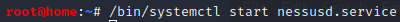
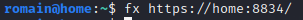
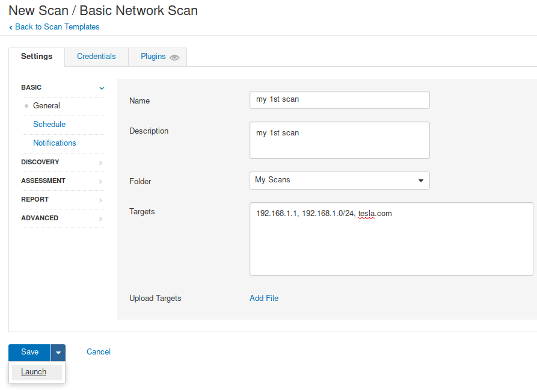
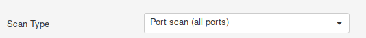
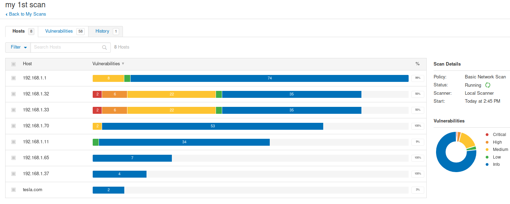
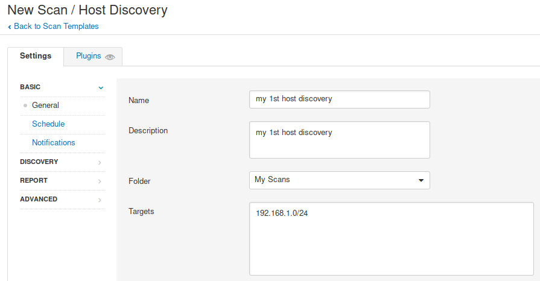
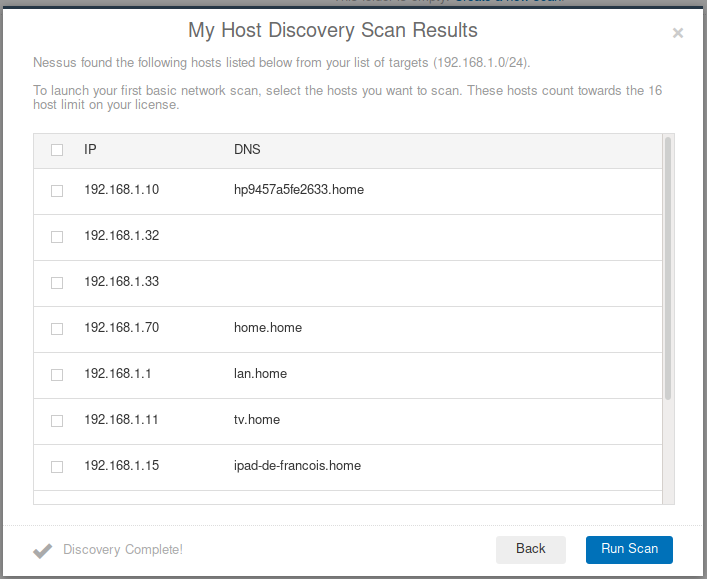

Nessus essentials (free edition) :
https://www.tenable.com/products/nessus/nessus-essentials
https://www.tenable.com/downloads/nessus?loginAttempted=true
download: Nessus-8.11.1-debian6_amd64.deb
key: 9553-6EA5-CF18-20E5-7C18
- You can start Nessus Scanner by typing /bin/systemctl start nessusd.service
- Then go to https://home:8834/ to configure your scanner


id: romain
pw: indigorillaz
Scan : Free account => 16 host limit
(VM virtualbox :
https://kali:8834/
key: 6B75-97AA-A43A-CD96-47FD
id: romain
pw: indigorillaz)
Basic Network Scan



HOST DISCOVERY SCAN

